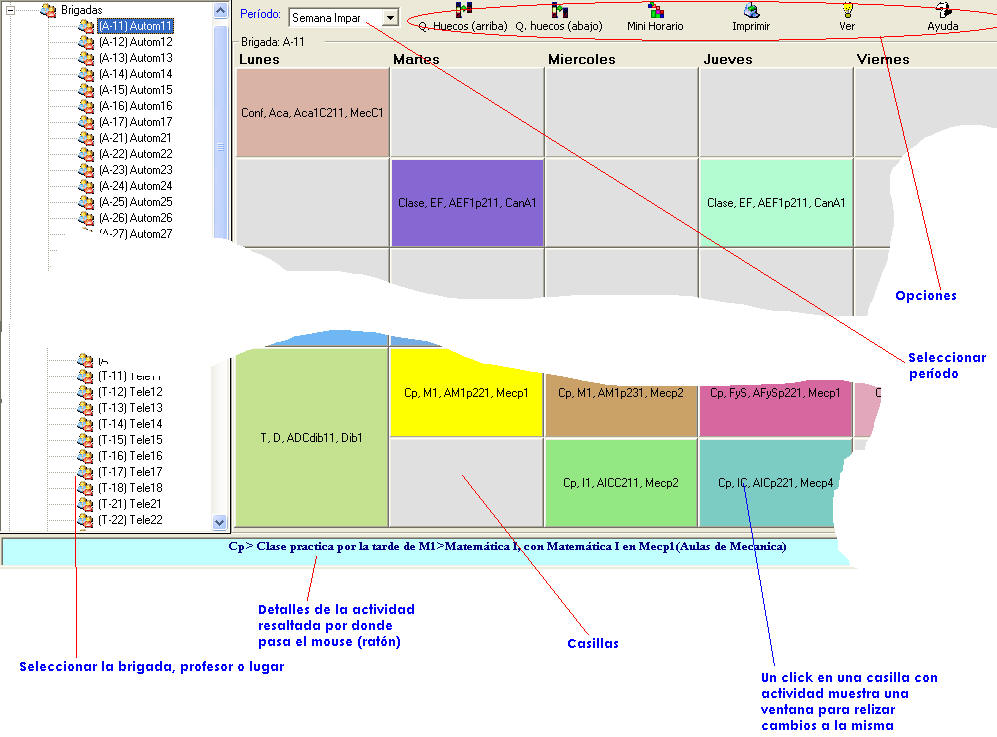
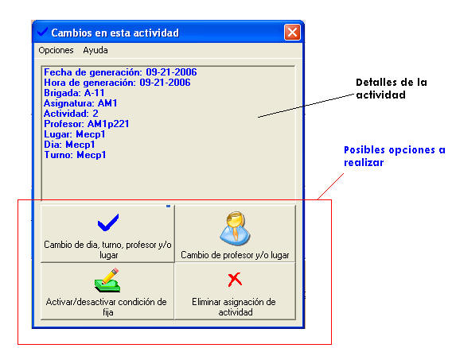
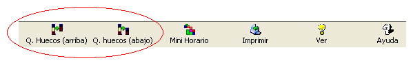
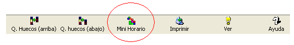
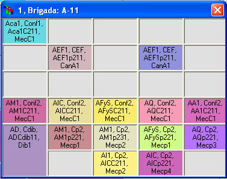
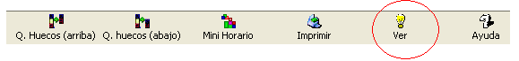
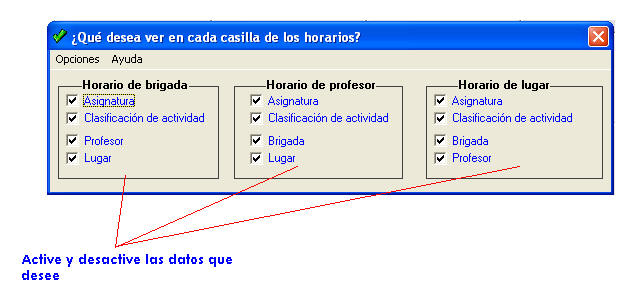
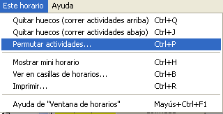

|
Ventana de horarios |
Después de abrir o crear un archivo de horarios, aparecerá la siguiente ventana:

Esta es la ventana de horarios, la cual le permitirá ver de forma rápida los horarios de todos los profesores, brigadas y lugares. Además podrá aquí realizar los siguientes cambios manuales con solo hacer clic sobre una casilla:
- Cambiar una actividad para otro día, y turno, con otro profesor y lugar
- Cambiar el profesor y lugar a una actividad
- Quitar los huecos automáticamente si se puede
- Imprimir el horario que tiene actualmente seleccionado
¿Cómo realizarle cambios a una actividad?
Haga clic sobre la casilla de la actividad deseada. Aparecerá la siguiente ventana:



¿Cómo seleccionar un horario?
- En el panel izquierdo de a la ventana, aparece una lista jerárquica con tres divisiones principales: Brigadas, Profesores y Lugares. De Clic en una de ellas.
- Luego aparecerán los identificadores. De clic en uno de ellos y se mostrará el horario.
- Para mostrar el horario de un período en específico de clic en la lista de Períodos que se encuentra en la parte superior del panel derecho
¿Cómo cambiar una actividad para otro momento, lugar y profesor?
- Clic en la actividad correspondiente. Aparecerá la ventana de cambios
- Haga clic en Cambio de día, turno, profesor y/o lugar
- Seleccione aquí el nuevo día, turno, profesor y lugar. El sistema deshabilitará aquellos turnos donde sea imposible colocar la actividad
¿Cómo cambiar solamente el lugar y/o profesor?
- Haga clic en la actividad correspondiente. Aparecerá la siguiente ventana
- Luego eliga el profesor y/o lugar correspondiente
¿Cómo quitar huecos en el horario?

- Seleccione el horario correspondiente
- De
clic en uno de los botones Quitar huecos,
que aparece en el panel superior de
- Aparecerá una ventana de seguridad. Elija Sí, para quitar los huecos.
Quitar huecos (arriba): El sistema intentará correr las actividades lo más cerca posible del inicio del día.
Quitar huecos (abajo): El sistema intentará correr las actividades lo más cerca posible del final del día .
Nota: Puede que al terminar esta acción usted no note los cambios. El sistema intenta desplazar hacia arriba y hacia una zona priorizada según la clasificación de la actividad en curso, lo cual no siempre es posible. Usted por su parte puede realizar los cambios manuales que desee.
¿Cómo mostrar varios horarios a la vez?

- Seleccione el horario correspondiente
- Haga clic en el boton Mini Horario
- Aparecerá una ventanita con el horario seleccionado la cual podrá cerrar cuando lo desee

4. Ir al paso 1. se desea mostrar otro horario.
Nota: Puede mostrar hasta 200 horarios al mismo tiempo.
¿Cómo imprimir un horario seleccionado?
- Haga
clic en el botón imprimir del panel superior de
En esta ventana podrá realizar cambios al modelo de horario a imprimir.
- Luego elija imprimir en la barra de menús
¿Cómo cambiar los datos que se ven en las casillas de horarios?

- Haga clic en ver de la barra de opciones. Aparecerá la siguiente ventana

2. Cuando haya realizado los cambios, haga clic en Aceptar y Terminar en el menú Opciones
Permutar actividades:

1. Haga clic en la opción correspondiente en el menú Este horario, o clic derecho sobre la casilla deseada.
2. Vuelva a repetir el paso 1 pero esta vez con otra actividad